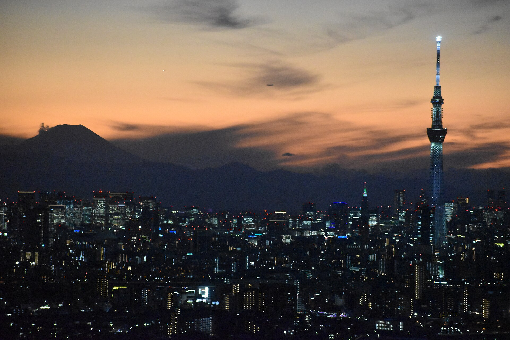
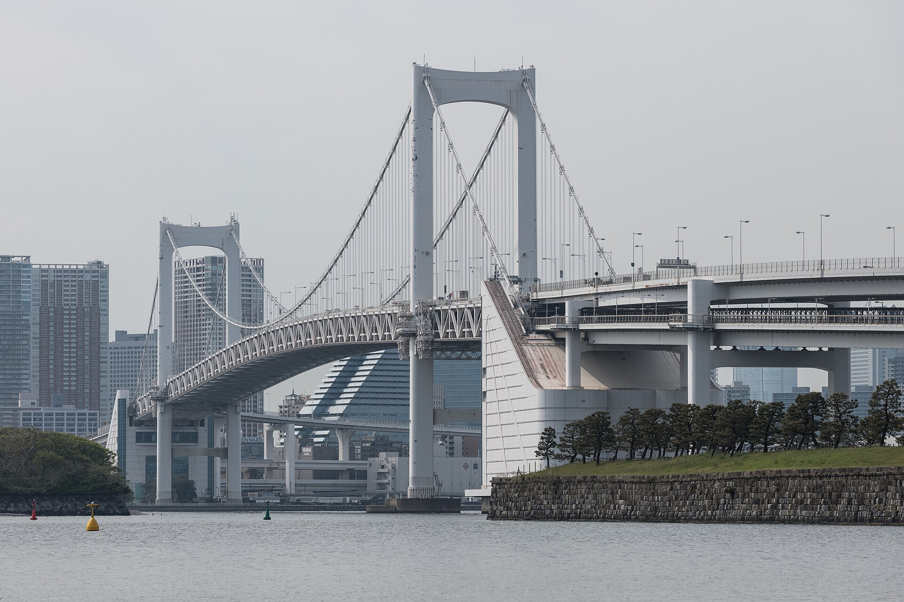
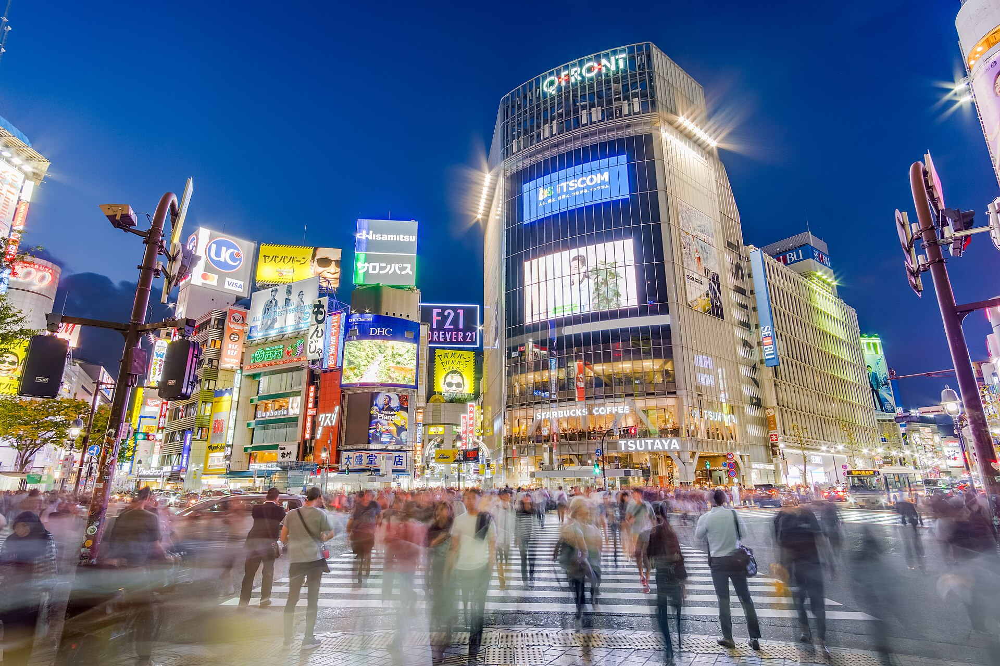
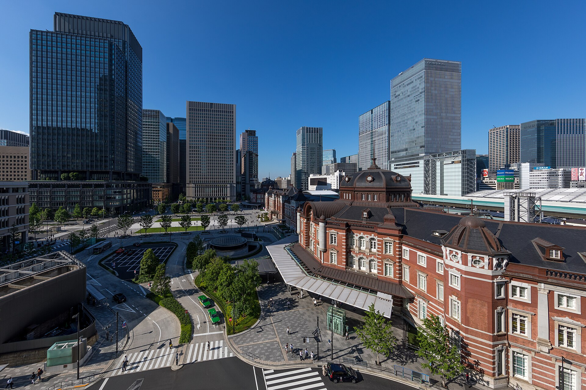
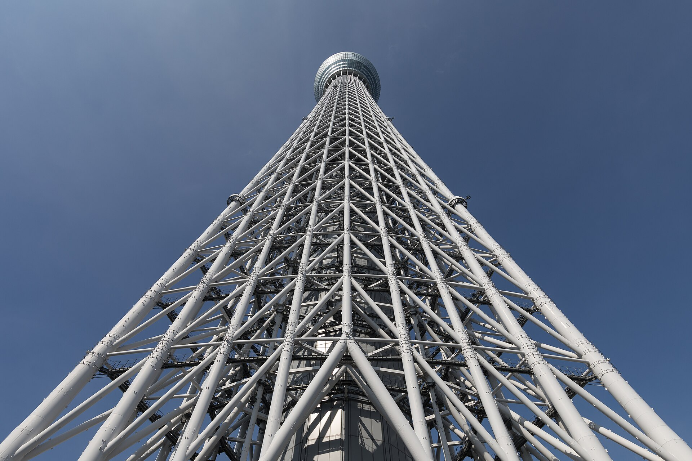
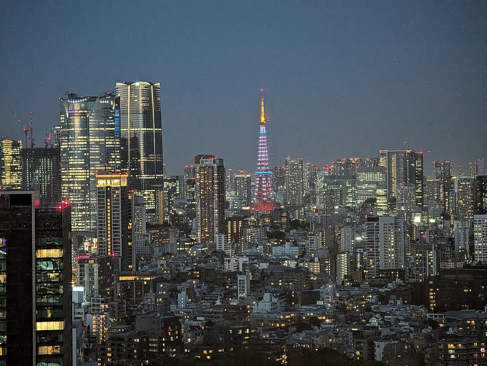

東京 · 日本
Longtemps la plus grande ville du monde, aujourd’hui 3ᵉ derrière Jakarta et Dhaka (ONU, 2025).
Iloha & Arthur

Iloha · 40 s
東京湾
Honshū, la plus grande île du Japon
Plaine du Kantō : de la place pour construire
Baie de Tokyo : le commerce par la mer

Iloha · 40 s
人口
14 M
habitants dans la ville
33 M
dans l’agglomération
31 M
prévus en 2050 (7ᵉ mondiale)

Iloha · 40 s → Arthur
経済
Le cœur économique du Japon, l’une des agglomérations les plus riches au monde
Sièges de Sony, Mitsubishi, Hitachi et l’une des plus grandes Bourses du monde
Au même niveau que New York et Londres

Arthur · 40 s
東京スカイツリー
3,5 M
passagers par jour à Shinjuku
634 m
la Tokyo Skytree
Des trains à l’heure, le Shinkansen, deux grands aéroports : Haneda et Narita.

Arthur · 45 s
地震
1923
grand séisme du Kantō
100 000
morts et plus
Bâtiments antisismiques, exercices d’évacuation dès l’école
Autre défi : le vieillissement de la population
Iloha + Arthur · 30 s
ありがとう
Une mégapole mondiale, riche et organisée, qui doit s’adapter aux séismes et au vieillissement.
Des questions ?
Sources : ONU, Al Jazeera, Dhaka Tribune · Photos : Wikimedia Commons